Local feeder (Hymenoptera: Eurytomidae) in stems of Festuca
| Record no.: | 0390 |
|---|---|
| Feeding guild: | Local feeder in stem |
| Taxonomy: | Hymenoptera: Eurytomidae: Tetramesa sp. |
| Stages observed: | trace, larva, adult |
| Distribution observed: | IA |
| Hosts in Festuca: | F. subverticillata (nodding fescue) (tentative ID) |
Larvae were found in culms of this woodland grass in summer 2017. One affected culm was slightly swollen and discolored at the location where a larva dwelled within. I reared adults the following spring; R. Hill identified them to genus (Hill 2018a; Hill 2018b) from photos. Palmer (2018) helped me tentatively identify the host plant as Festuca subverticillata.
Tetramesa festucae has been previously recorded from Festuca sp. (Krombein et al. 1979).
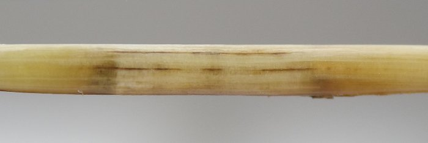
 Prev
Prev
{kind=link}
{kind=link}
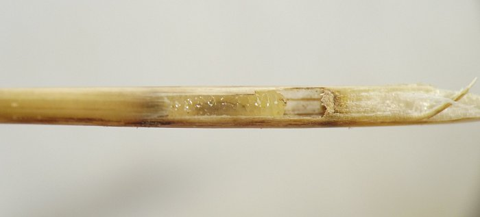
{kind=link}
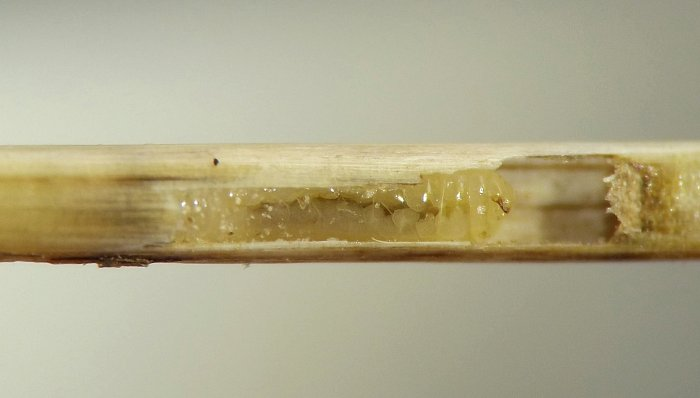
{kind=link}
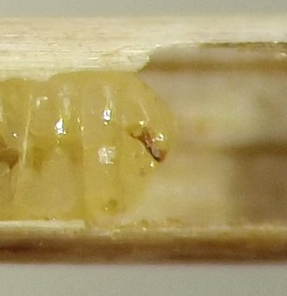
{kind=link}
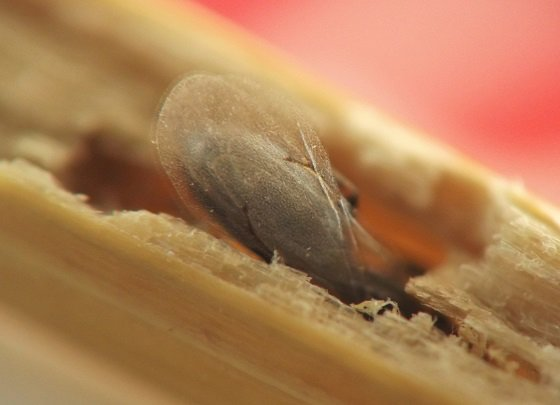
{kind=link}
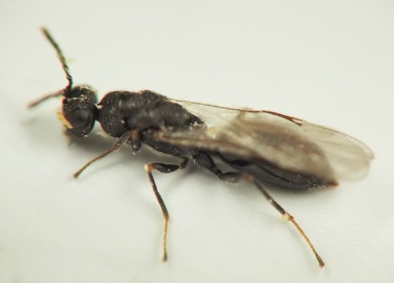
{kind=link}
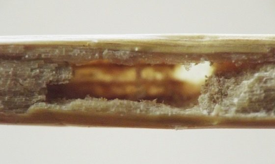
{kind=link}
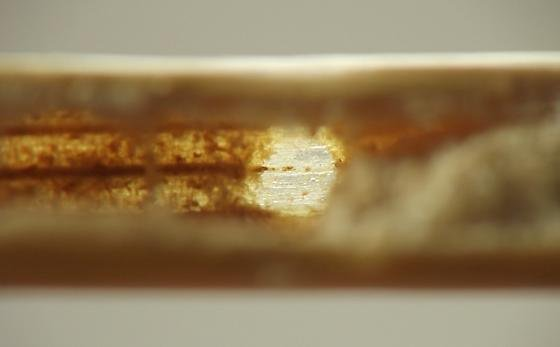
{kind=link}
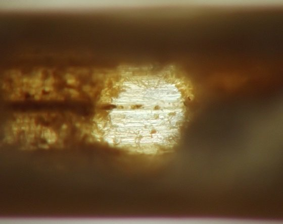
{kind=link}
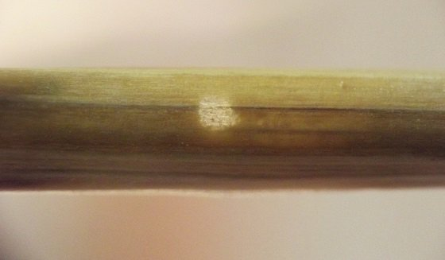
{kind=link}
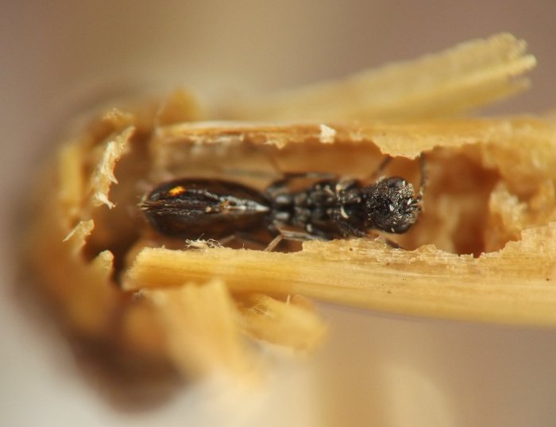
{kind=link}
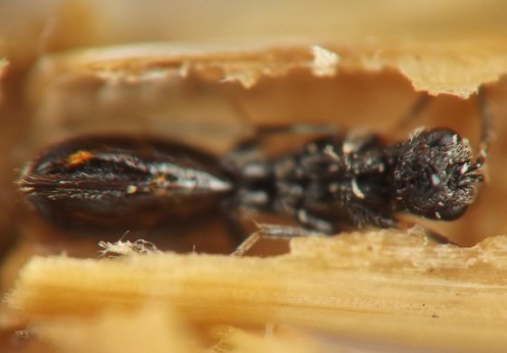
{kind=link}
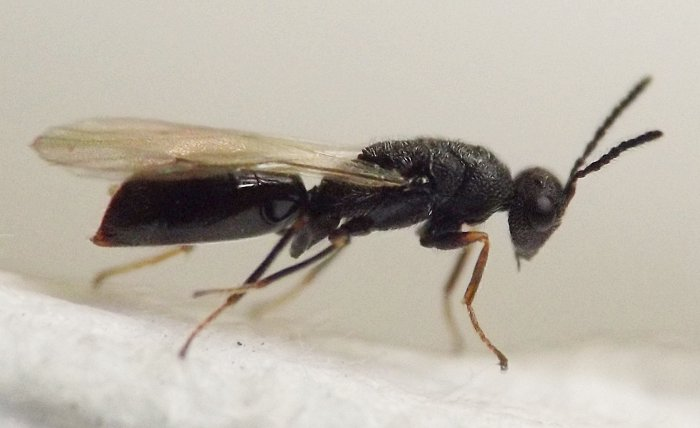
{kind=link}
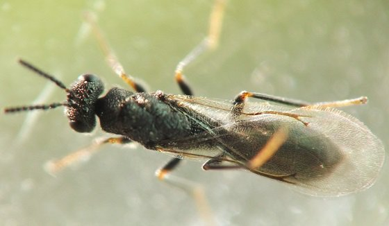
Coll. 07/01/17, photos of culm chamber and larva on 07/05/17 (01-02, 04-05), adults found in rearing container on 05/15/18 (some out and about in the rearing container and others still in culms), photos of adults and exit window in culm on 05/15/18-05/18/18 (06-15). All specimens above from Iowa, USA.
- Hill, R. 2018a. Comment on contributor post at BugGuide.net. Retrieved November 13, 2023 from https://bugguide.net/node/view/1548819.[return to in-text citation]
- Hill, R. 2018b. Comment on contributor post at BugGuide.net. Retrieved November 13, 2023 from https://bugguide.net/node/view/1548826.[return to in-text citation]
- Krombein, K.V., Hurd, Jr., P.D., Smith, D.R., and B.D. Burks. 1979. Catalog of Hymenoptera in America north of Mexico. Smithsonian Institution Press.[return to in-text citation]
- Palmer, M.W. 2018. Comment on contributor post at BugGuide.net. Retrieved November 13, 2023 from https://bugguide.net/node/view/1548836.[return to in-text citation]
Page created: November 13, 2023. Last update: March 10, 2026